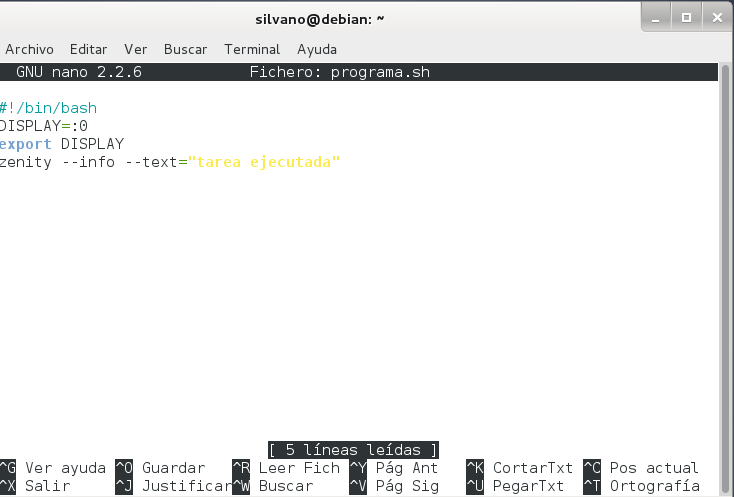

- Módulo: Administración de sistemas operativos
- Título del trabajo Tareas programadas
- Componentes del grupo: Silvano Pérez Yanes
- Curso Académico: 2º ASIR
- Fecha de entrega: 20 de enero 2015
Para esta actividad vamos a crear tareas programas tanto en linux como en windows, para poder ejecutar programas o mensajes de manera automática y que nos pueda avisar
Para empezar vamos a realizar una tarea programada en windows que será del tipo diferido, la cual, realizará de apagado, mediante un script una vez.
En este tipo de tarea, trata sobre, tareas que se realizan, como su propio nombre indica, de tareas periódicas, que nuestro caso queremos que nos envie un mensaje del sistema.
Las asíncronas son tareas que se pueden realizar de manera diaria, semanal o mensual, pero que si no llegan a realizase, por "x" motivos, al cabo de un tiempo se realizará de manera automática, de pendiendo de cuando queremos que espere la tarea en realizarse.
Una vez hecho en windows, las tareas en linux se realizaran mediante comandos, como viene siendo habitual.
En el caso de las diferidas en linux, nos basta con realizar el comando "at" y la acción que queremos que realice.
Las taeras periódicas en linux, se pueden realizar mediante crontab, un programador de tareas en segundo plano, y en el cuál, podemos configurar los procesos que queremos que realice, en mi caso, ejecutaré un script que me mande un mensaje en pantalla cada "x" tiempo.
De igual manera que en el crontab, el anacron nos sirve para programar tareas, pero asíncronas, para ello utilizaremos el script anterior para realizar la tarea.